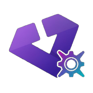

Bulk Import
Select apps already on your phone, pick the stores to scan, and add everything ObtainX finds in one pass instead of searching and tracking each app one by one.

Get updates - for both Play-Store and non-Play-Store apps - straight from the source. You can track releases from GitHub, GitLab, F-Droid, APKMirror, APKPure, and more, giving you full control over how updates are discovered, downloaded, and installed.
ObtainX is a fork of Obtainium, and began as a way to choose your own installer, so updates could show more details and keep Advanced Protection enabled. It then snowballed into a complete overhaul with Material 3 Expressive UI, bulk app import, clearer update states, folders, on-demand checks, and more.
Select apps already on your phone, pick the stores to scan, and add everything ObtainX finds in one pass instead of searching and tracking each app one by one.
Group apps into manual or rule-based folders, set each folder's own view settings, and move quiet apps into On-Demand Only mode so they do not add background update noise.
Six update states, upfront download sizes, cancellable downloads, versions skip ability, and ability to choose your own installer - giving you full clarity and control over every step of the update process.
Material 3 Expressive cards, controls, motion, color, and layout updates run across the app list, app details, add flows, settings, and every major interaction.